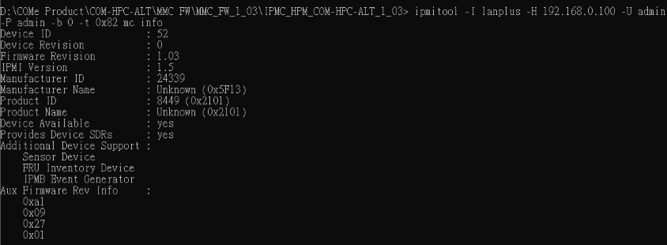
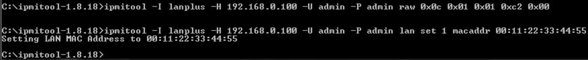
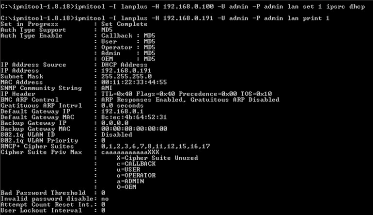
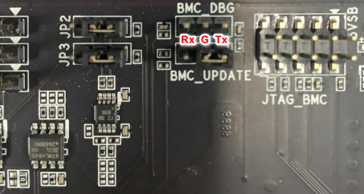
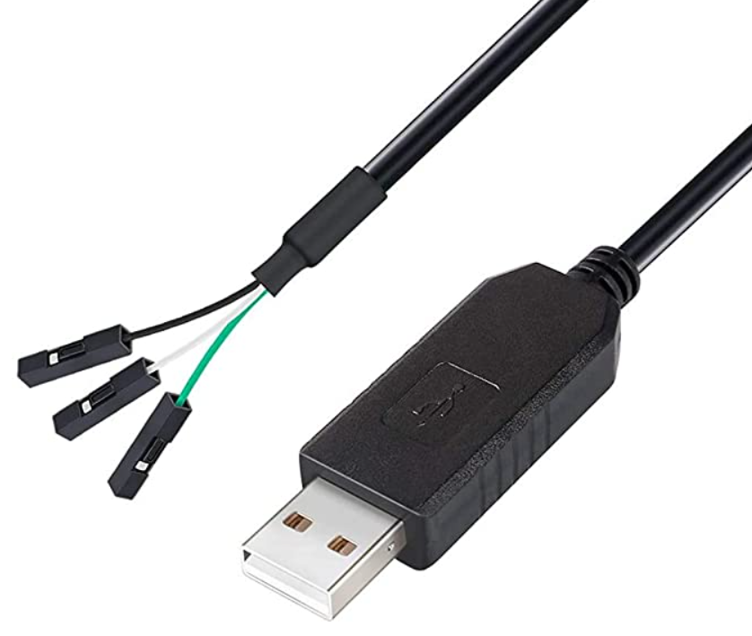
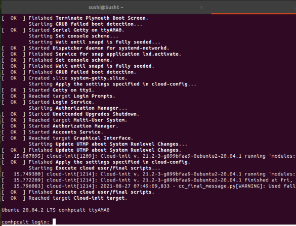
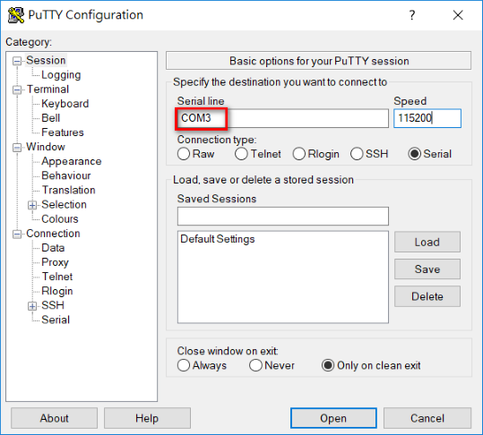

How to Configure BMC MAC/IP addressThere are several approaches to access BMC to change MAC/IP Address. Using IPMI Network Using BMC Serial Console port Using IPMB SSIF Interface This procedures will walk you through how to do that. Note: Default network configuration on BMC is static mode with 192.168.0.100 (IP address)/00:00:00:00:00(MAC address) Using IPMI Network to change MAC/IP AddressBefore you begin, Prepare the Ethernet cable and connect to your host machine and AADK system like this: Download & Install IPMI Management Utility on your host machine Ubuntu: Type the below commands to install sudo apt updatesudo apt install ipmitool Windows 10: Click here Confirm the connection is alive between your host machine and AADK system In your host Machine with Linux Environment: Type the below command to configure the static IP address sudo ifconfig eth0 192.168.0.22 netmask 255.255.255.0 In your host Machine with Windows Environment: Configure the static IP Address on the network device and save it: Type the Ping command to see if the connection is alive between your host machine and the AADK system sushi@Sushi:~$ ping 192.168.0.100PING 192.168.0.100 (192.168.0.100) 56(84) bytes of data.64 bytes from 192.168.0.100: icmp_seq=1 ttl=64 time=0.569 ms64 bytes from 192.168.0.100: icmp_seq=2 ttl=64 time=0.572 ms64 bytes from 192.168.0.100: icmp_seq=3 ttl=64 time=0.560 ms Getting Started open cmd.exe (Windows Environment ) or terminal ( Linux Environment) on your host machine and execute the command to see the MMC FW is alive: Note: the Default network configuration is static mode with 192.168.0.100 ipmitool -I lanplus -H 192.168.0.100 -U admin -P admin -b 0 -t 0x82 mc info  Type the below command to change MAC address on your host machine ipmitool -I lanplus -H 192.168.0.100 -U admin -P admin raw 0x0c 0x01 0x01 0xc2 0x00ipmitool -I lanplus -H 192.168.0.100 -U admin -P admin lan set 1 macaddr 00:11:22:33:44:55  Type the below command to configure DHCP Mode. (it would be for a while to configure it) ipmitool -I lanplus -H 192.168.0.100 -U admin -P admin lan set 1 ipsrc dhcp it would be reacquired dynamical IP address and type the below command to see the network information.  Type the command to enable Static Mode and IP address will be automatically configured to the default 192.168.0.100 ipmitool -I lanplus -H 192.168.0.100 -U admin -P admin lan set 1 ipsrc static Using BMC Serial Console portBefore you begin, There is 3 Pin header (BMC_DBG) on the carrier board that supports the serial console for BMC (with IPMI functions).  Prepare USB to TTL Serial Adapter 3.3V Debug Cable TX RX Signal 3 Pin like this:  Plug the USBtoRS232 adapter cable to your host machine and connect 3 pins with the corresponding the pins. In your host Machine with Linux Environment: Type this command to list the USB devices: lsusb sushi@Sushi:~$ lsusbBus 002 Device 001: ID 1d6b:0003 Linux Foundation 3.0 root hubBus 001 Device 011: ID 0403:6001 Future Technology Devices International, Ltd FT232 Serial (UART) IC once detected, the devices will be under the /dev/ path to see if the interface is visible with this command: ls /dev/ttyUSB0 If you are installing a Minicom serial device then follow the below procedure: sudo apt-get install minicom sudo minicom -s Go to [Serial Port Setup] in the Configure of minicom application Press A and then edit to /dev/ttyUSB0 Press E and then edit to 115200 8N1 Go to [Exit] Then power on target system and you will get the booting messages from Serial Console  In your host Machine with Windows Environment: The common terminal software is putty. Putty is for free to download. After executing it, please configure the following parameters Select Connection type to Serial. Modify Serial line to the COM port which is found in the device manager. Set Speed to 115200. Click Open button to enter serial console  After successful set up, you can see the logs from serial console and please use the credentials to login Username: sysadmin password: superuser Getting Started Configure MAC address on bootloader Reboot or power on your system Press any key when you see the following prompt: U-Boot 2013.07 (Jul 28 2021 - 14:09:52) It will boot into u-boot U-Boot 2013.07 (Jul 28 2021 - 14:09:52)I2C: readyDRAM: 448 MiBFlash: Found SPI Chip Micron/Numonyx N25Q512A(0x20ba) 2x I/O READ, NORMAL WRITEFound SPI Chip Micron/Numonyx N25Q512A(0x20ba) 2x I/O READ, NORMAL WRITE128 MiBMMC:Net: ast_eth0DRAM ECC disabledHit any key to stop autoboot: 0AST2500EVB> Type the command to enter MAC address and then reboot the system Note: Please enter any value for MAC address because the default is 00:00:00:00:00:00 setenv ethaddr 00:22:33:44:55:66saveenv Check if MAC address is changed Get into the BMC Linux If the change becomes valid, you can see the prompt login messageNote: ADL + your MAC address ADL002233445566 login: Configure the static IP address Type the command to enter IP address you want ifconfig eth0 192.168.0.100 netmask 255.255.255.0 up Once done with the above steps, BMC will be equipped with Ethernet function. Using IPMB SSIF Interfaceunder development